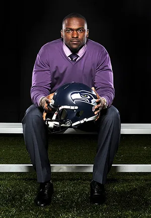
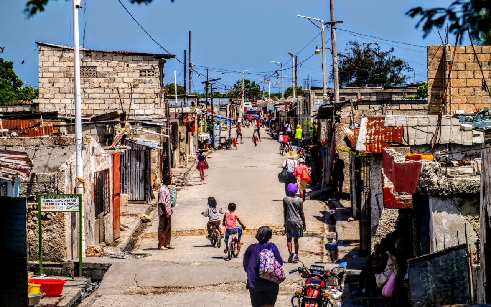
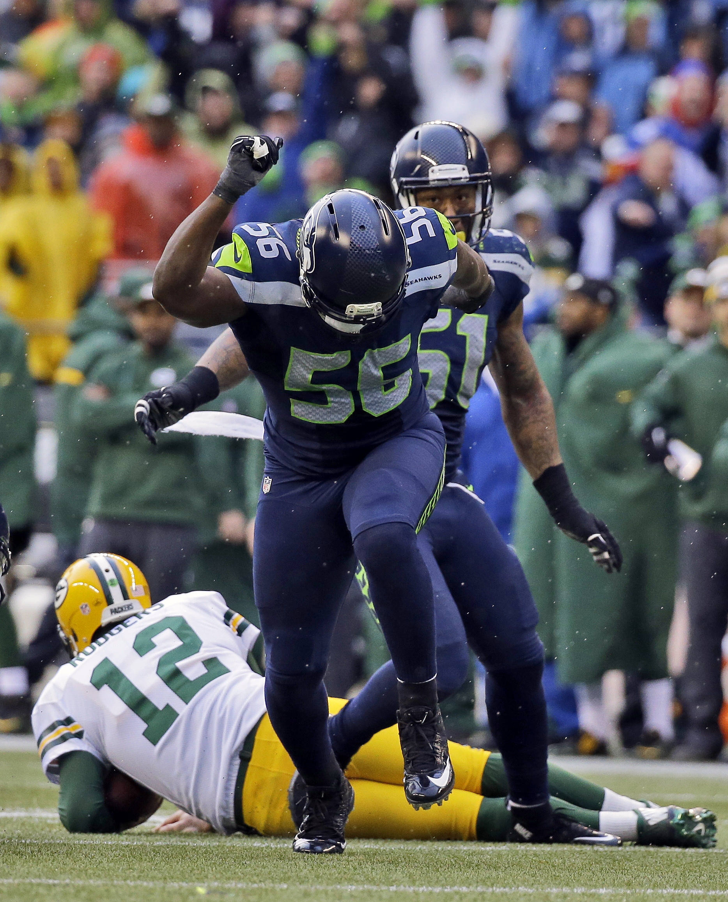

Building A brighter Future
Welcome to the Cliff Avril Family Foundation.

Welcome to the Cliff Avril Family Foundation
Super Bowl Champion Cliff Avril started the Cliff Avril Family Foundation in March 2014. Inspired by the loss of his grandmother and his mother’s diagnosis of diabetes, Cliff realized the importance of educating today’s youth about healthy living.
The Cliff Avril Family Foundation mission is to increase the awareness of Type 2 diabetes in youth and to encourage healthy living through nutrition and exercise. As well as provide educational support and opportunities to youth in Haiti, along with various community-based organizations in Jacksonville, Seattle and Charlotte.
What we are addressing in Haiti?

My past and my roots

What we strive for
Stories

Story 2
Cliff is involved in community events, providing fun activities for families, including a football camp on Saturdays and a Family Fun Day on Sundays at a local park. He also discusses his passion for addressing type 2 diabetes, particularly within the African American and Haitian communities, highlighting the importance of understanding our bodies and maintaining an active lifestyle.

Story 3
Seahawks Legend Cliff Avril hosts his widely popular annual Dining to Make a Difference. Proceeds from the event benefit the work the Cliff Avril Family Foundation is doing in Seattle, Jacksonville and Haiti. Cliff, along with former and current Seahawks players and NBA legends, serve as waiters for the night. The evening includes a live and silent auction; and recognizes local companies, community organizations and individuals who are doing amazing things..